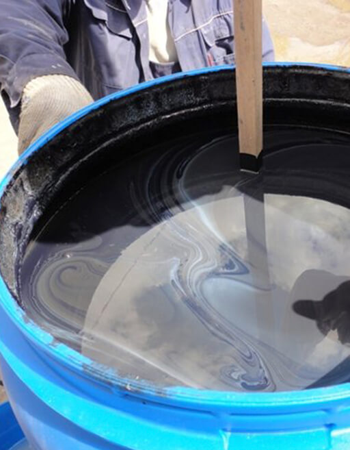
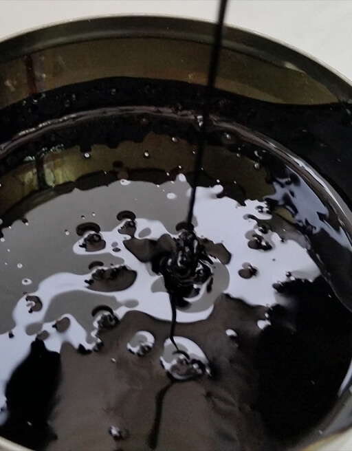
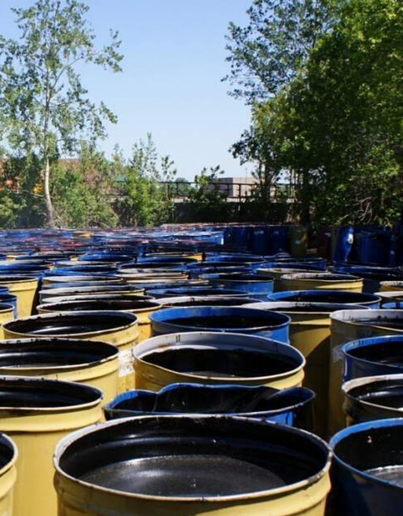
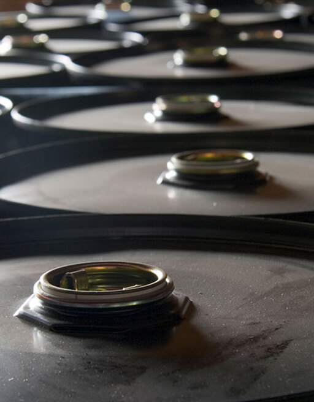
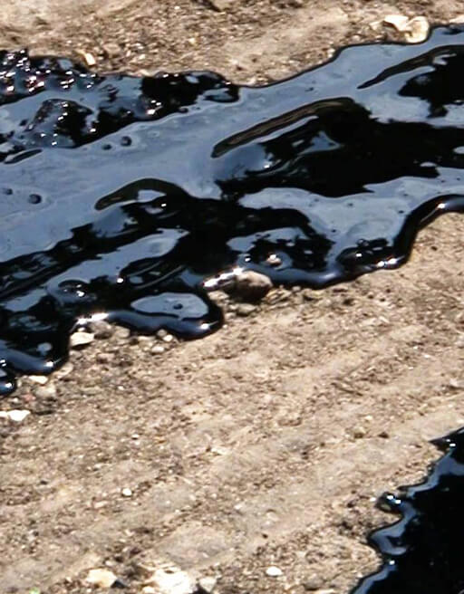

Продукция
Полимерно-битумные вяжущие и битумные эмульсии собственного производства.

Полимерно-битумное вяжущее (ПБВ) — вяжущее, полученное введением блоксополимера типа СБС, пластификатора и ПАВ в вязкие дорожные битумы. ПБВ применяется при строительстве, ремонте и реконструкции дорог, мостов и аэродромов. Применение ПБВ по ГОСТ Р 52056 в составе высокоплотных асфальтобетонов взамен битумов по ГОСТ 22245 позволяет значительно повысить его качество, так как даже при сопоставлении значений показателей, гарантированных указанными нормативными документами, очевидны значительные преимущества ПБВ, а главное — их свойства в отличие от битумов можно регулировать в широких пределах и, следовательно, учитывать фактические климатические условия и условия движения автомобилей, при которых эксплуатируются дорожные, мостовые и аэродромные покрытия в любом регионе России.
| Характеристики | ПБВ 90 | ПБВ 130 | ПБВ 60 | ПБВ 40 |
|---|---|---|---|---|
| Глубина проникания иглы, 0.1 мм, при 25°C | Не менее 130 | Не менее 90 | Не менее 90 | Не менее 90 |
| при 0°C | Не менее 50 | Не менее 40 | Не менее 40 | Не менее 40 |
| Температура размягчения по кольцу и шару | Не ниже 49°C | Не ниже 51°C | Не ниже 51°C | Не ниже 51°C |

Представляют собой жидкость темно-коричневого цвета, которую получают путем диспергирования (измельчения) битума в воде с добавлением специального эмульгатора — поверхностно-активного вещества (ПАВ). Битумные эмульсии применяют в строительстве и ремонте автодорог как вяжущий или плёнкообразующий материал. По виду поверхностно-активного вещества, которые используются в качестве эмульгатора, битумные дорожные эмульсии делятся на 2 вида: анионные битумные эмульсии (ЭБА) и катионные битумные эмульсии (ЭБК). По смешиваемости с различными минеральными материалами каждый вид битумной эмульсии подразделяют ещё на 3 класса: анионные — это ЭБА-1, ЭБА-2 и ЭБА-3; и катионные — это ЭБК-1, ЭБК-2 и ЭБК-3.
| Класс эмульсии | Вид работы |
|---|---|
| ЭБК-1 | Устройство поверхностной обработки. |
| ЭБК-2 | Устройство слоёв дорожных одежд способом пропитки. Приготовление чёрного щебня и пористых щебёночных смесей. Устройство поверхностной обработки. |
| ЭБК-3 | Приготовление плотных эмульсионно-минеральных смесей, в том числе грунтовых. |
| Смешиваемость | ЭБК-1 | ЭБК-2 | ЭБК-3 |
|---|---|---|---|
| Со смесями минеральных материалов пористого зернового состава | Не смешивается | Смешивается | Смешивается |
| Со смесями минеральных материалов плотного зернового состава | Не смешивается | Не смешивается | Смешивается |

Битумы нефтяные применяются для строительства дорожных покрытий, гидроизоляционных, кровельных и других видов работ. В зависимости от назначения нефтеперерабатывающая промышленность выпускает соответствующие по свойствам виды нефтяных битумов. Битумы вязкие применяют в качестве вяжущего материала при строительстве дорожных и аэродромных покрытий. Их изготавливают из окисленных и неокисленных продуктов прямой перегонки нефти или компаундированием этих продуктов с экстрактами селективной очистки. Изготовление вязких дорожных нефтяных битумов из крекинг-остатков и битумов деасфальтизации без дополнительной переработки не допускается.
| Класс битума | Вид работы |
|---|---|
| БНД 130 / 200 | Для поверхностной обработки, горячих асфальтобетонных смесей. |
| БНД 90 / 130 | Для горячих смесей в южных районах, для устройства покрытий на автомагистралях с тяжёлым движением в районах с континентальным климатом. |
| БНД 40 / 60 | Для покрытий на автомагистралях в южных районах, литых асфальтобетонных смесях. |

Мазут — жидкий продукт тёмно-коричневого цвета, остаток после выделения из нефти или продуктов её вторичной переработки бензиновых, керосиновых и газойлевых фракций. Мазут — это смесь углеводородов, нефтяных смол, асфальтенов, карбенов, карбоидов и органических соединений, содержащих металлы. Мазуты применяются в качестве топлива для паровых котлов, котельных установок и промышленных печей. В связи с необходимостью углубления её дальнейшей переработки мазут во всё большем масштабе подвергают дальнейшей переработке, отгоняя под вакуумом дистилляты. Вакуумные дистилляты применяют как сырьё для получения моторных топлив и дистиллятных смазочных масел. Остаток вакуумной перегонки мазута используют для переработки на установках термического крекинга и коксования, в производстве остаточных смазочных масел и гудрона, затем перерабатываемого на битум.

Основу этого вещества составляют нефтепродукты, поэтому по составу гудрон очень схож с нефтяными фракциями. Обязательными компонентами являются: нефтяные смолы, состоящие из сложных по составу углеводородов и придающие гудрону вязкость и тягучесть; асфальтены — твёрдые вещества, повышающие температурную устойчивость; асфальтовые кислоты и их ангидриды, имеющие смолистую консистенцию и относящиеся к полинафтеновым кислотам. Также обязательной составляющей гудрона является высокое содержание примесей металлов, присутствующих в нефти.